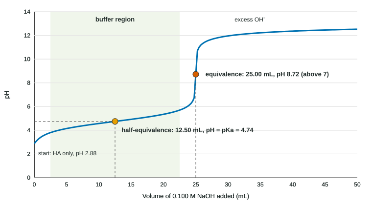

A titration adds a solution of known concentration (the titrant, in a buret) to a measured sample (the analyte) until they have reacted exactly. Topic 4.6 used titrations to count moles. Here we watch the pH while it happens. The result, a titration curve, is one of the most-tested pictures on the exam, and every part of it comes from ideas you already have: complete neutralization first, then the equilibrium of whatever is left.
The four regions of a weak acid titration
The figure is the curve for 25.00 mL of 0.100 M acetic acid (Ka = 1.8 × 10⁻⁵) titrated with 0.100 M NaOH. Read it left to right.

| Region | What is in the flask | How the pH is found | pH here |
|---|---|---|---|
| Start (0 mL) | HA only | Weak acid: [H₃O⁺] ≈ √(Ka·C) | 2.88 |
| Buffer region (0 to 25 mL) | HA and A⁻ | [H₃O⁺] = Ka × [HA]/[A⁻] | slow rise |
| Half-equivalence (12.50 mL) | [HA] = [A⁻] | pH = pKa | 4.74 (4.75 measured) |
| Equivalence (25.00 mL) | A⁻ only | Weak base: Kb = Kw/Ka | 8.72 |
| After equivalence | A⁻ and excess OH⁻ | [OH⁻] from the excess | levels off near 12.5 |
Why is there a cliff? In the buffer region, each drop of OH⁻ is used up converting HA to A⁻, so free OH⁻ stays low and the ratio [HA]/[A⁻] changes slowly. Near equivalence, almost no HA is left to absorb the next drop, so the pH jumps several units within a fraction of a milliliter. The equivalence point sits at the center of that steep rise.
Reading the curve: equivalence and half-equivalence
Two readings answer most curve questions.
The equivalence volume gives the amount of analyte. At equivalence, moles of OH⁻ added = moles of acid at the start.
Half the equivalence volume gives pKa. At that point half the HA has become A⁻, so [HA] = [A⁻]. Put that in the Ka expression:
Ka = [H₃O⁺][A⁻]/[HA] = [H₃O⁺] × 1, so pH = pKa at the half-equivalence point.
The exam's most common error in this unit is swapping these two points. pH = pKa is half-way to equivalence, in the flat buffer region, never at the cliff.
Worked example 1: concentration and Ka from a curve. A 20.00 mL sample of a weak acid is titrated with 0.1250 M NaOH. The steep rise is centered at 24.00 mL, and the pH at 12.00 mL is 3.86. Find the acid concentration and Ka.
Step 1. mol OH⁻ at equivalence = 0.02400 L × 0.1250 mol/L = 3.000 × 10⁻³ mol = mol HA.
Step 2. [HA] = 3.000 × 10⁻³ mol / 0.02000 L = 0.1500 M.
Step 3. 12.00 mL is half of 24.00 mL, the half-equivalence point, so pKa = 3.86 and Ka = 10^−3.86 = 1.4 × 10⁻⁴.
Calculating the pH at any point
Every point on the curve uses the two-stage method from topic 8.4: react the moles, then find the pH of what is left.
Worked example 2: in the buffer region. 25.00 mL of 0.100 M acetic acid, after 10.00 mL of 0.100 M NaOH.
Step 1. 2.50 × 10⁻³ mol HA − 1.00 × 10⁻³ mol OH⁻ → 1.50 × 10⁻³ mol HA and 1.00 × 10⁻³ mol A⁻.
Step 2. [H₃O⁺] = Ka × [HA]/[A⁻] = 1.8 × 10⁻⁵ × 1.50/1.00 = 2.7 × 10⁻⁵ M (the volume cancels).
Step 3. pH = 4.57.
Worked example 3: at the equivalence point. Same titration at 25.00 mL.
Step 1. All 2.50 × 10⁻³ mol HA is now A⁻, in 50.00 mL: [A⁻] = 0.0500 M.
Step 2. Kb = Kw/Ka = 5.6 × 10⁻¹⁰; [OH⁻] = √(5.6 × 10⁻¹⁰ × 0.0500) = 5.3 × 10⁻⁶ M.
Step 3. pOH = 5.28, so pH = 8.72. Notice the total volume (50.00 mL, not 25.00 mL) in Step 1.
Worked example 4: after equivalence. Same titration at 30.00 mL. Excess OH⁻ = 3.00 × 10⁻³ − 2.50 × 10⁻³ = 5.0 × 10⁻⁴ mol in 55.00 mL: [OH⁻] = 0.0091 M, pOH = 2.04, pH = 11.96.
Strong acid, weak acid, weak base
| Titration | Start | Before equivalence | Equivalence pH |
|---|---|---|---|
| Strong acid + strong base (HCl + NaOH) | low (1.00 for 0.100 M) | rises slowly, no buffer region | 7.00 |
| Weak acid + strong base (CH₃COOH + NaOH) | higher (2.88) | buffer region; pH = pKa halfway | above 7 (A⁻ is a base) |
| Weak base + strong acid (NH₃ + HCl) | high, the curve falls | buffer region; pH = pKa of BH⁺ halfway | below 7 (BH⁺ is an acid) |
The equivalence volume does not depend on strength: 0.100 M HCl and 0.100 M acetic acid of the same volume need the same NaOH, because OH⁻ takes protons from acetic acid molecules as completely as it removes H₃O⁺.
For a weak base such as NH₃, the half-equivalence point has [NH₃] = [NH₄⁺], so pH equals the pKa of the conjugate acid NH₄⁺: 14.00 − pKb = 14.00 − 4.74 = 9.26. Writing pKb (4.74) there is a frequent slip.
Polyprotic acids
A polyprotic acid has more than one ionizable proton and gives them up one at a time: H₂A ⇌ H⁺ + HA⁻ (Ka₁), then HA⁻ ⇌ H⁺ + A²⁻ (Ka₂). The second proton leaves a negative ion, which holds it more tightly, so Ka₂ is smaller than Ka₁. When the two pKa values are far apart, the titration curve shows two steep rises:
- The first equivalence point (H₂A all converted to HA⁻) and the second (HA⁻ all converted to A²⁻) are equally spaced: if the first is at 20.0 mL, the second is at 40.0 mL.
- pH = pKa₁ halfway to the first equivalence point; pH = pKa₂ halfway between the first and second.
A triprotic acid such as H₃PO₄ can show up to three; in practice its third rise is too small to see in water.
Particle views of the titration
The exam also asks you to draw or choose the particles present at a point on a curve. For HA titrated with NaOH, ignoring water and the trace ions made by the equilibria:
- Start: HA only.
- Half-equivalence: equal numbers of HA and A⁻, plus Na⁺ equal to the number of A⁻.
- Equivalence: A⁻ and Na⁺ in equal numbers, no HA.
- After equivalence: A⁻, extra OH⁻, and Na⁺ equal to all the NaOH added.
Na⁺ is a spectator, but it still has to be in the drawing, in the right number.
Where students lose points
- Confusing equivalence and half-equivalence: pH = pKa at half the equivalence volume.
- Reading the last volume on the axis, or the total volume of the flask, instead of the equivalence volume.
- Saying every equivalence point is pH 7.
- Forgetting that the volume at equivalence is the sum of both solutions.
- Using pKb for the half-equivalence pH of a weak base.
- Not rinsing the buret with titrant (it dilutes the titrant, so the volume used is too large and the calculated analyte concentration too high).